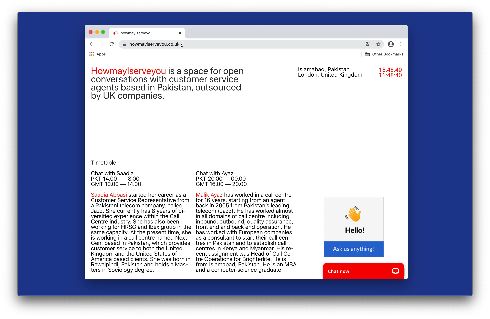
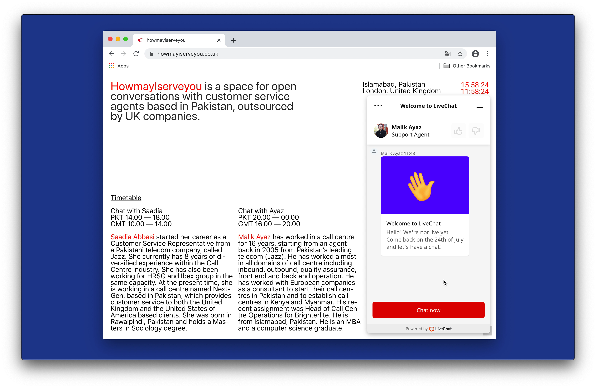

How May I Serve You, 2020
in collaboration with Saadia Abbasi and Malik Ayaz
 Specification of the piece:
Live-chat forum
Description:
How May I Serve You aims to disrupt the corporate customer service experience to humanise those hidden behind its technologies through open conversations between two customer service agents from Pakistan and an online UK-based audience.
Due to the pandemic circumstances, an online platform was the frame I had. This digital format re-shaped my intention, resources and intended audience – the visitor is now a user, and the gallery is now a device. This site-specificity and its context redirect the final project into new roots to explore identity, interactivity, globalisation, invisibility and outsourcing on the internet.
This participatory performance took place for 8 hours on the 24th of July and the 15th of September 2020. 246 people joined and started a one-two-one live chat. An archive containing these conversations and a report is going to be published very soon.
How May I Serve You was commissioned by The World Transformed (TWT) and first shown at the RCA 2020 degree show